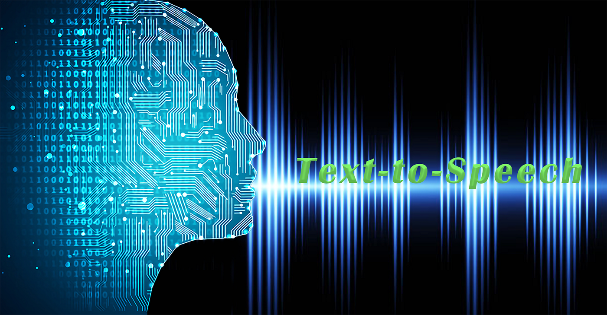

Ma veille technologique :
L'évolution de l'intelligence artificielle dans le domaine de la génération de voix
L'évolution des IA de génération de voix a été marquée par des progrès significatifs
au fil des années, offrant une qualité de synthèse vocale de plus en plus réaliste grâce
à l'adoption de modèles d'apprentissage profond (deep learning).
Ces avancées ont conduit à une diversification de leurs applications, touchant
différents aspects de notre vie quotidienne. Dans le domaine grand public, elles sont
couramment utilisées pour alimenter les assistants vocaux populaires tels que Siri,
Google Assistant et Alexa. Elles ont également trouvé leur place dans la narration
d'audiolivres, de podcasts et dans l'accessibilité des personnes malvoyantes,
améliorant ainsi l'accès à l'information et au divertissement.
Un autre domaine d'application important réside dans l'assistance à la communication, offrant aux individus atteints de troubles de la parole la possibilité de convertir du texte en parole et vice versa. Cette fonctionnalité améliore considérablement la qualité de vie de ceux qui en ont besoin. Par ailleurs, les technologies de génération de voix automatisent la narration de contenus écrits, que ce soit dans la création de vidéos, de publicités, de contenus éducatifs ou d'autres supports médiatiques. Cette automatisation permet de gagner du temps et de proposer des expériences plus engageantes pour le public.

Les entreprises ont également adopté ces technologies pour personnaliser l'expérience client en proposant une communication vocale plus convaincante via des chatbots vocaux ou des messages automatisés. De plus, elles facilitent la localisation et l'internationalisation de contenus en générant des voix dans différentes langues et accents, favorisant ainsi une communication mondiale.

Le cas de Scarlett Johansson est un exemple d’une telle exploitation de l’ia de génération de voix à des fins néfastes. Dans cet exemple, le développeur de l’application Lisa AI à utilisé une vidéo réelle de Scarlett Johansson et lui a fait dire des propos qui la montrait comme une sorte d’ambassadrice de l’application et en faisait la promotion ce qui n’est évidemment pas le cas et a été fait sans aucune autorisation de cette dernière. La phrase que dit Scarlett Johansson a été générée en utilisant un système de génération de voix utilisant l’ia. On peut ainsi se questionner sur les utilisations potentiellement illégales d’une telle technologies et aux méthodes de protection qui pourront être mises en place dans le futur afin de s’en prémunir.